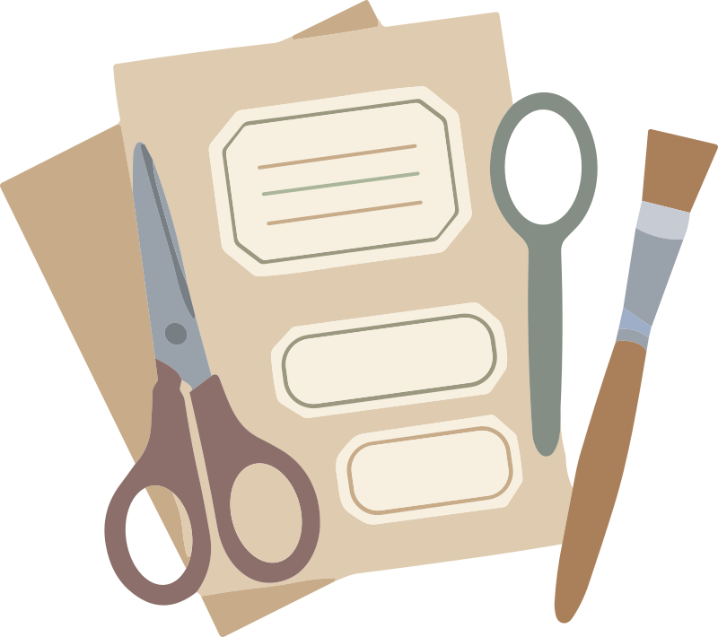
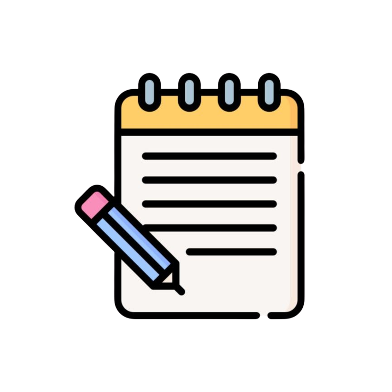

Aktivitas Detektif Magnet
Kamu sudah punya bekal informasi. Sekarang waktunya beraksi! Kamu boleh menyelidiki secara daring atau memakai benda nyata, bersama orang tua atau temanmu. Pilih sesuai minatmu!

Dalam simulasi ini, kamu akan berperan sebagai detektif yang bertugas menyelidiki sifat kemagnetan berbagai benda di sekitar kita Melalui pendekatan penemuan (discovery), kamu akan diajak untuk membuat prediksi (hipotesa awal) sebelum menguji langsung benda-benda tersebut dengan magnet. Aktivitas ini dapat dilakukan secara berkelompok bersama teman-temanmu atau orang tuamu untuk melatih keterampilan observasi, kerja sama tim (gotong royong), serta kejujuran dalam mencatat data pengamatan sesuai dengan fakta (karakter shiddiq).

Ayo Siapkan Alat dan Bahannya!Magnet
Sebaiknya sediakan berbagai bentuk seperti magnet batang, U, atau keping.
Benda Magnetis
Penjepit kertas (paper clip), paku kecil, jarum, gunting (bagian logam), kunci pintu.
Benda Non-Magnetis
Pensil kayu, penghapus karet, kertas, sedotan plastik, daun, kelereng kaca, dan lainnya.
Wadah / Nampan
Wadah atau nampan plastik untuk meletakkan campuran benda.
LKPD
Lembar Kerja Peserta Didik (LKPD).

Ikuti Langkah-LangkahnyaSiapkan satu set magnet dan satu nampan berisi campuran benda (magnetis dan non-magnetis).
Ayo amati benda-benda tersebut tanpa menyentuhnya dengan magnet terlebih dahulu.
Diskusikan bersama orang tua atau temanmu untuk mendiskusikan dan memprediksi benda mana yang akan tertarik magnet dan mana yang tidak, lalu pisahkan menjadi dua tumpukan berdasarkan prediksi tersebut.
Ayo menguji prediksi awal kamu dengan mendekatkan magnet ke setiap benda secara bergantian.
Setelah kamu praktikkan, mulailah menyortir ulang benda-benda tersebut ke dalam dua kelompok baru berdasarkan hasil percobaan nyata (Benda Magnetis dan Benda Non-Magnetis).
Ayo kita pahami kembali dengan meraba dan mengamati bahan dasar dari benda-benda yang berhasil ditarik oleh magnet (misalnya: apakah terbuat dari besi, plastik, atau kayu).
Diskusikan bersama orang tua atau temanmu untuk membuat kesimpulan bersama mengenai ciri-ciri benda yang dapat ditarik oleh magnet, lalu catat hasilnya secara jujur di lembar kerja.